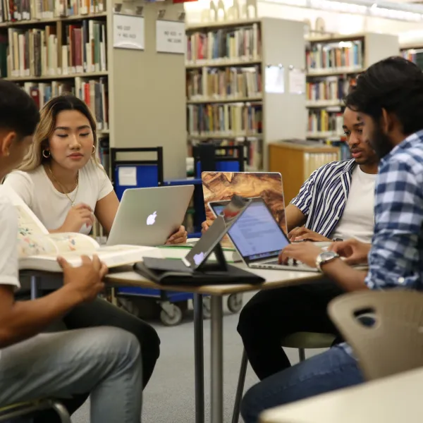
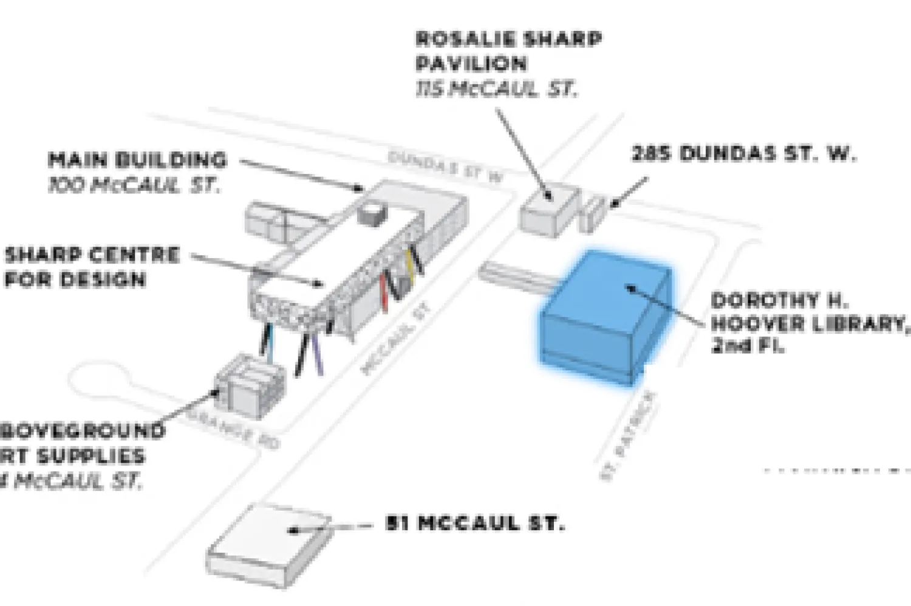
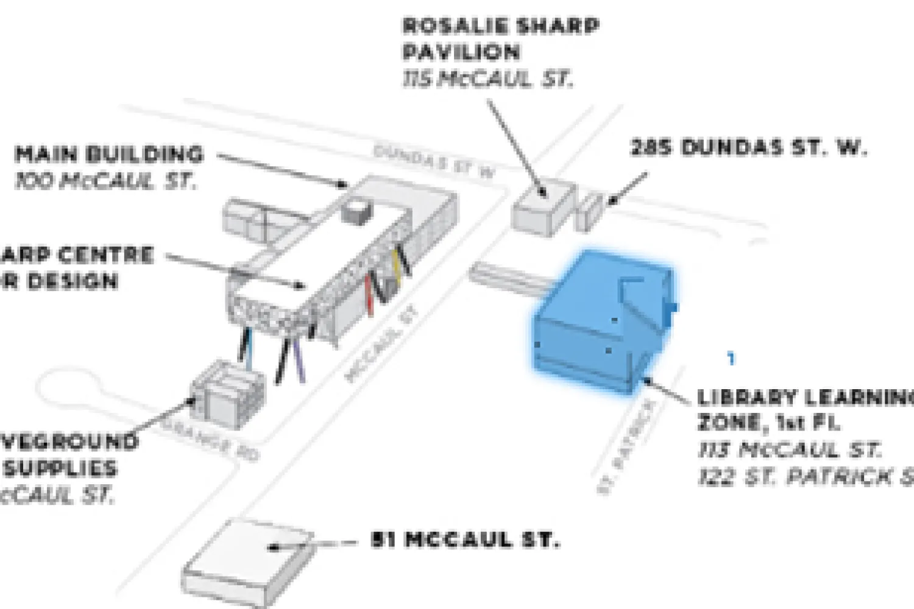
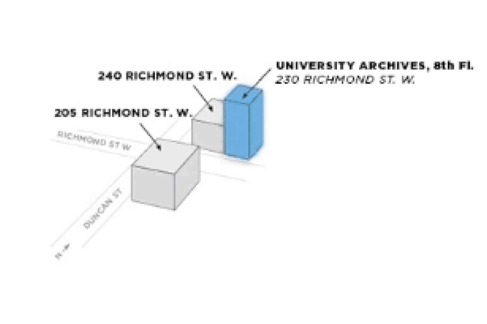
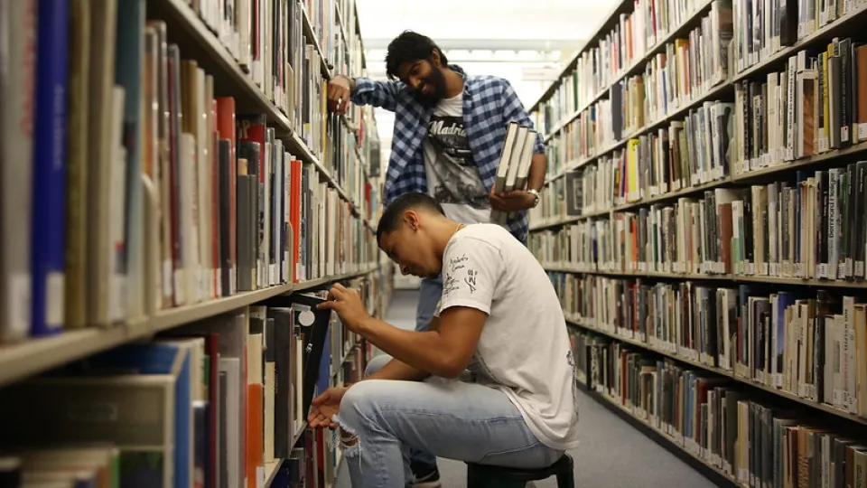
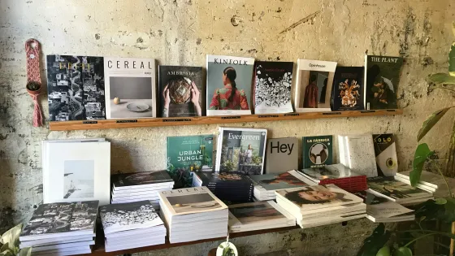
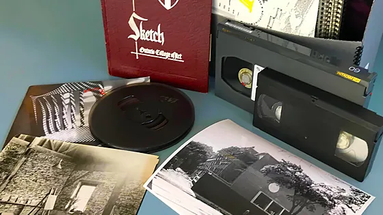
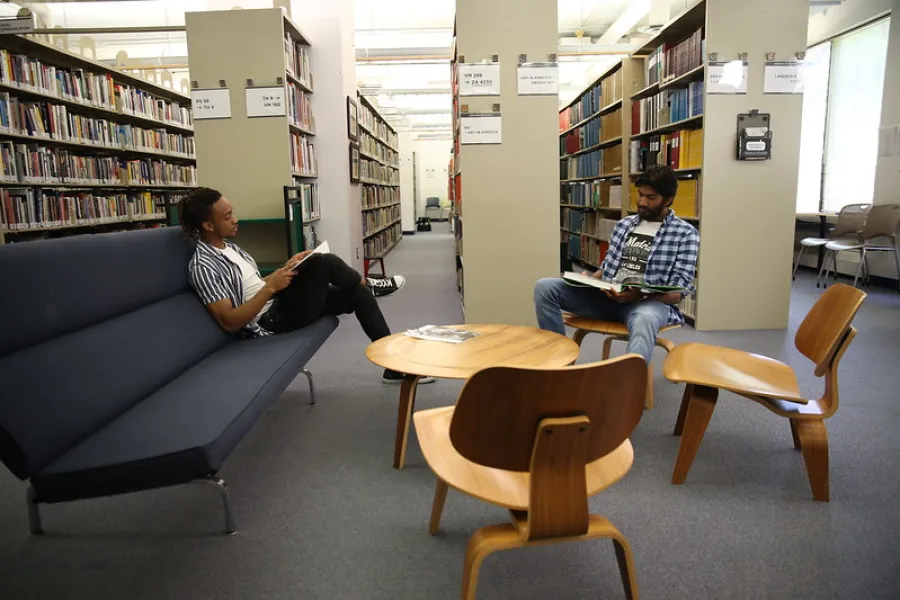
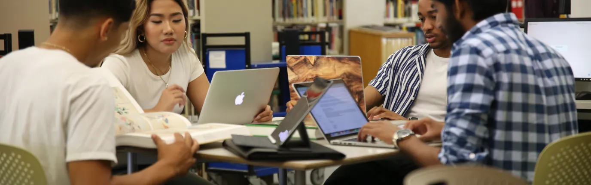
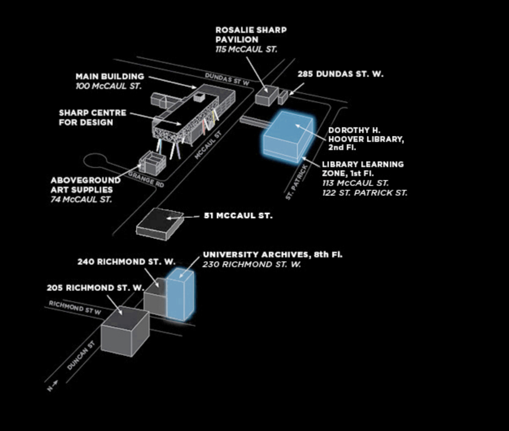

OCAD U · Digital Library Redesign
A library should feel
like discovery.
Not administration.
Overview
I worked on this project as part of a UX analysis of the library website. I ran thorough user research and documented the existing experience, which surfaced a set of clear problems, and from there, achievable solutions for each one.
The homepage tries to do everything at once.
I went through the live site the way a student would: plenty of information, no clear place to start. Six issues kept coming up.
The number one question, buried in tiny text.
"Books and more", Omni, OCAD Discover: all the same box.
When nothing is emphasized, nothing stands out.
You have to already know what ProQuest is before you can find it.
Same forty links, one long scroll.
A destination, when it should be the default.
Six issues. Six changes.
Everything pinned here is fixed in the prototype.
- 01Search sits below the fold → moved to the top of the page.
- 02Hours hide behind a link → an open-today badge in the hero.
- 03Advanced Search, Journal Search, Research Guides: every link opens a new page → pills that expand the search with extra filters.
- 04Explore: nine links, nine page loads → accordions that open in place.
- 05Location, hours and contact sit in separate blocks further down → one grouped, stacked block.
- 06The header takes the whole first screen → calmer layout, same OCAD character.
Twelve students. Three weeks.
My process: keep diaries with twelve students for two weeks, then watch them do real assignments for one. The pattern was clear: they don't struggle with searching, they struggle with starting.
I open it, I see twenty links and three search bars, and I just close the tab and email my prof.
The library is a person, not a database.
Google first. Librarian second. Catalogue last.
“Books” and “articles” are the same drawer.
Asking them to pick a format up front just adds a step.
Research is emotional, not logical.
A calmer page lowers the stress of starting.
Six changes.
My strategy: put search first, keep every kind of search on one page, and make the practical details impossible to miss. It came down to six changes, listed here in the order you meet them on the page.
01
I moved the search box up.
On the current site you scroll past a full-height header before you can search. Now it's the first thing on the page, right under the library's name, with Ask a librarian sitting beside it.
02
I put the hours in the hero.
An open-today badge with the day's hours sits next to the library's name, plus a link to all hours and locations. The most asked question, answered before you ask it.
03
I made each search type a pill.
Advanced search, journal search, databases A-Z, research guides, and course reserves are pills inside the search container. Tap one and the search section expands with additional fields for a more curated search, instead of taking you to a different page.
04
I turned Explore into accordions.
On the current site every Explore item is a link to another page. Now each one opens as an accordion right where you are: read what you need, close it, move on.
05
I grouped the practical details.
Location, hours, and contact used to sit in separate blocks scattered down the page. Now they're together and stacked in order of need, so students find what they're looking for quickly.
06
I kept it OCAD.
Black and white, one red accent, sharp edges, bold type. The layout got calmer and more organized, but the eclectic yet academic character of the university stays.
What I built.
Explore the working prototype for the library by clicking and scrolling inside the devices below.
Build a precise search: combine fields, operators, and filters across books, articles, media, and more.
Search journals by title or ISSN, or browse journals by category.
A list of databases the library provides access to, search beyond the catalogue, or focus on a specific discipline or resource type.
- JSTORBackfiles of 2,500+ research journals across disciplines.
- Ebook CentralFull-text access to 170,000+ ebooks in all academic subject areas.
- Oxford Art OnlineGrove Dictionary of Art and Benezit Dictionary of Artists.
- Criterion on Demand4,000+ streaming feature films, classics, and documentaries.
- CINAHL Plus with Full TextNursing, allied health, and health design journals back to 1937.
- IEEE Articles on DemandNewEngineering and computer science publications.
Find the best resources, books, articles, images, for your subject, topic, or area of research.
- Art Research GuideMarsha Taichman · updated May 22, 2026
- Design Research GuideSusan Kun · updated Jun 1, 2026
- Liberal Arts & Sciences Research GuideSarah Butterill · updated Jun 1, 2026
- A–Z Database ListFull list of databases, including trial access.
Course reserves are instructor-assigned materials held at the service desk on short-term loan.
- GDES 2B16 · Typography 2R. Osei · 12 items
- DRPT 3C01 · Painting Studio 3L. Marchetti · 8 items
- INDS 2B04 · History of Industrial DesignT. Nguyen · 6 items
- PHOT 1B02 · Photography FundamentalsS. Adeyemi · 9 items
- DIGF 2A55 · Creation & ComputationM. Castellanos · 5 items
- AHIS 1B01 · Global Art HistoriesJ. Whitfield · 14 items
Who we are, where we came from, and the organizations we work with.
Our mission is to partner with faculty to develop a campus-wide learning strategy, enhancing the learning experience of undergraduate and graduate students at OCAD University.
We continue to develop specialized collections and collaborate with academic colleagues to improve access to information, resources, and services in support of teaching, learning, and research.

The main library is named after Dorothy H. Hoover, who served as head librarian and lecturer from 1952 to 1968. In 1957 the library moved into the expanded main building at 100 McCaul Street; in the mid-1980s the collection was relocated to the Grange Wing; and in 1999 the library moved to its current home in Village by the Grange at 113 McCaul Street.
The OCAD University Library is a member of the Ontario Council of University Libraries (OCUL), the Association of Independent Colleges of Art & Design Libraries (AICAD-L), the Art Libraries Society of North America (ARLIS/NA), and the Canadian Research Knowledge Network (CRKN).
Three spaces across campus, when they’re open and how to find them.
113 McCaul St., Level 2, Room 215 (also accessible from 122 St. Patrick St.)
Monday–Friday, 9:00 am–5:00 pm. Saturday & Sunday: closed. The returns box is open for book drop-offs.

113 McCaul St., Level 1, Room 110 (also accessible from 122 St. Patrick St.)
Tuesday–Friday, 11:00 am–5:00 pm. Monday and weekends: closed. A valid OCAD U ID card is required to enter.

230 Richmond St. W., 8th floor (elevator access only).
Research assistance and support by appointment: contact archives@ocadu.ca.

Equal access to services and collections for every member of the OCAD U community.
The OCAD U Library is committed to providing equal access to services and collections for all students, faculty, and staff at the University.

Where access to library facilities or services is difficult, the library makes special provisions so users with disabilities can access resources in their preferred format. To access accessible formats, students first register through OCAD U Accessibility Services.
The library maintains an Accessible Teaching and Learning Resources guide with accessibility standards and practices faculty can use when selecting or creating course materials. The Snow: Education, Access and You site also covers creating accessible classroom experiences.
For more information, contact libraryhelp@ocadu.ca.
Everything you need to know about borrowing, renewing, and returning materials.
Your valid OCAD U ID card is your library card: bring it with the items you want to borrow to the library service desk. Community borrowers use their membership card.

Loan periods and limits vary by material type and user group. Due dates are listed in your library account; overdue items may incur fines.
Renew online through your library account before the due date, or ask library staff in person, by phone, or by email.
Yes. Course reserves are instructor-assigned materials held at the service desk on short-term loan so every student in a course can access them.
Yes. Request items from other Ontario university libraries through the shared university catalogue, and pick them up at the library when they arrive.
Alumni and members of the public can apply for a special membership to borrow from the collection. Ask at the service desk or email libraryhelp@ocadu.ca.
Over 270,000 books and ebooks, plus journals, zines, films, and the University Archives.
The OCAD U Library provides access to over 70,000 print books, exhibition catalogues, reference materials, and other works, plus over 200,000 ebooks that can be accessed virtually.
Visit the Collection Discovery page to view new books, featured books, and other promoted materials.
Our databases and print and electronic periodicals and magazines provide access to hundreds of journals and thousands of research articles and resources covering art, design, social sciences, humanities, and more.

Our special collections include rare books, manuscripts, and periodicals; hundreds of handmade and self-published zines; artist’s books; documentaries, artist videos, and films; and illustrated children’s books.
Our archives preserve materials documenting OCAD U’s history and student life since 1876, student publications, course calendars, graduation programs, exhibition materials, photos, posters, governance records, and reports.
Open to all OCAD U community members and researchers from the public, with research support by appointment: archives@ocadu.ca.

A second home for study and studio work on Level 1 of 113 McCaul St.
An alternative work and study space for students: desktop and laptop workstations, printers and scanners, equipment loans, and table space for studio work.

Several of the library’s collections are housed here, including selected new books, reference books, and art and design annuals. A valid OCAD U ID card is required to enter.
The Open Research Repository is a digital archive managed by the University Library to collect, preserve, and distribute scholarly and creative output generated by the OCAD U community.
Open Research collaborates with faculty and research groups interested in depositing their works, past and present. Depositors must hold copyright for submitted items or obtain permission from publishers or copyright owners.

Welcome to the OCAD U Library! We’re here to support your research, learning, and studio practice.

Locations
Dorothy H. Hoover Library: 113 McCaul Street, Level 2, room 215 (also accessible from 122 St. Patrick St.)
Library Learning Zone: 113 McCaul St., Level 1, room 110 (also accessible from 122 St. Patrick St.)
University Archives: 230 Richmond St. W., 8th floor (elevator access only)

Hours
Dorothy H. Hoover Library
113 McCaul Street, 2nd floor, Room 215 (also accessible from 122 St. Patrick St.)
- Monday–Friday, 9:00 am to 5:00 pm
- Saturday & Sunday: Closed
The returns box is open for book drop-offs.
Holiday Closures:
- Monday, May 18, 2026 (Victoria Day)
- Wednesday, July 1, 2026 (Canada Day)
- Monday, August 3, 2026 (Civic Holiday)
- Monday, September 7, 2026 (Labour Day)
Library Learning Zone
113 McCaul St., Level 1, room 110 (also accessible from 122 St. Patrick St.)
May 19, 2026 – June 26, 2026:
- Monday: Closed
- Tuesday–Friday: 11:00 AM – 5:00 PM
- Saturday–Sunday: Closed
Note: except for public events and exhibitions, a valid OCAD U ID card is required to enter the Library Learning Zone.
Contact
Library information, collections, holds, and more
libraryhelp@ocadu.ca, or 416-977-6000 ext. 358
Reference, research, and instruction
libraryresearch@ocadu.ca
University Archives
libraryresearch@ocadu.ca
Exhibitions and bookings
susankun@ocadu.ca
Follow Us

Accessibility
Built in from the start, not added at the end.
WCAG AA was the baseline, not the goal. Every screen was tested with a keyboard and a screen reader before it was tested with a mouse.
prefers-reduced-motion.OptionalThe design system
Three fonts, two paper tones, one red accent. Close to OCAD's own visual language: eclectic, but academic.
Same 12-column grid for the page and the product inside it.
Colour only when something matters.
08 / Coda
The same library,
easier to start.
A library should feel like discovery.